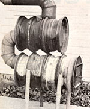
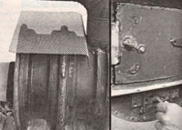
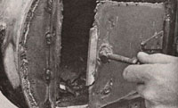

Sometimes saving cash is a simple matter of being able to see "junk" as "raw material".
After installing a woodburning fireplace insert last fall, I was pleased to note that my household's heating oil consumption dropped from the previous year's nearly 800 gallons to a mere 50! So, when I noted that I was then buying more oil for the small space heater in my workshop/garage than for our entire home, I decided that the utility building ought to have a woodstove of its own!
Now, I wasn't about to invest in a readymade heater for my workroom, but I'm a pretty enthusiastic do-it-myselfer and figured I could come up with a design that would get the job done. I began my "research" by visiting a neighbor who'd built a stove from kit-supplied components and a pair of 55-gallon drums. I was quite impressed with his heater, too. However, when I added the price of the kit to the cost of the 30-gallon containers that I wanted to use (the drums go for up to $15 apiece in my part of Michigan), I decided to look for another solution.
Not long after making that decision, I happened to be rummaging around in my barn and noticed that I had a goodly supply of old auto tire rims stacked in one corner. The steel doughnuts are made of pretty stout material, and I figured that a car-rim heater should last a long time! So, I borrowed an arc welder and set to work.
I first cut the centers out of most of the rims that would form the firebox and the upper "heat exchange" cylinder. (The lower chamber, as shown in the photos, consists of four welded-together 14" rims . . . while the top cylinder is made from three.) Scrap pipe (for the legs) and sheet metal (which I used to form the ends of the heater and the pipe collars) finished the job. I recycled the 6" stovepipe that had been used on the garage's oil-burner, but did have to buy two elbows to connect the upper and lower sections of my stove.
To protect the connecting pipe sections from early burnout, I decided not to remove the center from the last rim in my stove's firebox, hoping the obstruction would serve as a baffle. I did cut the "innards" from all of the rims forming the stove's upper portion, but don't know that it was really necessary to do so.
The total cost of my little workshop heater breaks down like this: 7 rims (I had them on hand, but they can be bought in this area for about $1.00 each), $7.00 . . . two 6" elbows (I used the least expensive I could find, at $2.00 apiece), $4.00 . . . and three pounds of welding rod, $3.00.
As you can see, even if I had gone out and purchased the tire rims, I would have paid a scant $14 for my workshop woodburner! The paltry amount I did spend bought me a clanged effective little heater, too. And I'm confident that anyone could duplicate the stove. After all, it shouldn't take more than 15 minutes of practice with a welder (have an experienced metal worker show you the ropes, and explain safe working practices) to learn to run an airtight-though not very pretty-bead.
So borrow an arc welder, scrounge up some tire rims and metal scraps, and give it a go! You'll end up with an "ugly duckling" woodburner. . . for a downright beautiful price!
EDITOR'S NOTE: Folks who are thinking of building their own stoves, but would prefer a design that's more attractive and versatile than Bill's tire-rim heater, might well find what they're looking for in MOTHER's Woodburning Stove Plans. The foolproof, step-by-step instructions will tell you how to turn about $40 worth of materials into a custom woodburner that will perform as well as many stoves costing up to $500. (In fact, we've heard from readers who've built the heaters and sold them for as much as $300!) If you're interested, send $10 to MOTHER's Woodburning Stove Plans, P.O. Box A, East Flat Rock, North Carolina 28726.
|
 The tire-rim stove may not be attractive, but it gets the job done |
 Expanded-metal screen on the heat exchanger dries boots and gloves and warms coffee... The homemade damper controls draft. |
 The door handle consists of a bolt. |